Aiemmin tallennettu kolmen kerroksen talo, alkuperäiset assetit ja erillinen primitiivikoe. Kamera kiertää eri korkeuksilta ja etäisyyksiltä. Talo ladataan tallenteesta — tämä ei ole uusi luova socket-rakennelma eikä käsin ladottujen 1 000 osan näyttö.
Vakaa 60 FPS EI ole vielä hyväksytty. 120 FPS:ää ei ole validoitu. Laskennan siirto taustalle ei yksin takaa tasaista ruutuaikaa: savun kyselyt, tuhoutuminen, renderöinti ja tulen esitykset jäävät osittain pääsäikeelle.
Tuki: 1–4 oikeaa workeria, pysyvät datapeilit ja vain mitätöityneet kohteet. Geometrialla on aiemmat enintään kaksi workeria. Palo ja huonesavu etenevät 2 Hz:n päätöksillä; niiden työjono toimii pääsäikeellä. Liike ja näkyvien efektien animointi jatkuvat ruuduittain.
Eläimet, rakennusten pintalumi ja lämpökentät pois. Maan/puiden lumi, sää, tuli, savu, vauriot, tuki ja sortuminen päällä. Primitiivit ovat vain testiadapteri, eivät julkaisun uudet oletusassetit.
Aluksi kolme sytytyskohtaa, sitten tahallinen lähes koko talon yhtäaikainen sytytys. Alitusaika on ajalla painotettu, rajana 60 FPS / 3 % toleranssi (17,182 ms). Tiukat 60/120-rajat raakadatassa. Ei keskiarvo-FPS-hyväksyntää.
| Koe / vaihe | Pahin ruutu | Min FPS | 1 % low | Alitusaika | Pisin jakso | Pystyssä / rauniot |
|---|---|---|---|---|---|---|
| native · baseline | 33.5 ms | 29.9 | 29.9 | 54.7 % | 66.7 ms | 1000 / 0 |
| native · three-seed-spread | 83.3 ms | 12.0 | 17.1 | 86.4 % | 999.9 ms | 1000 / 0 |
| native · mass-ignition-stress | 1683.3 ms | 0.6 | 0.6 | 100.0 % | 19499.2 ms | 997 / 0 |
| native · damage | 650.0 ms | 1.5 | 1.5 | 100.0 % | 24682.3 ms | 997 / 0 |
| native · collapse | 2933.3 ms | 0.3 | 0.4 | 100.0 % | 53347.9 ms | 992 / 4 |
| native · rubble | 2899.8 ms | 0.3 | 0.3 | 100.0 % | 14466.1 ms | 976 / 7 |
| primitive · baseline | 16.8 ms | 59.5 | 59.5 | 0.0 % | 0.0 ms | 1000 / 0 |
| primitive · three-seed-spread | 66.7 ms | 15.0 | 26.8 | 13.2 % | 133.3 ms | 1000 / 0 |
| primitive · mass-ignition-stress | 1699.9 ms | 0.6 | 0.6 | 100.0 % | 19949.2 ms | 997 / 0 |
| primitive · damage | 583.3 ms | 1.7 | 1.7 | 100.0 % | 24748.9 ms | 997 / 0 |
| primitive · collapse | 3299.9 ms | 0.3 | 0.3 | 100.0 % | 52764.6 ms | 991 / 0 |
| primitive · rubble | 1999.9 ms | 0.5 | 0.5 | 100.0 % | 14949.4 ms | 819 / 159 |
M1 Pro, Chrome headless, 1440 × 900, noin 60 Hz, kehityspalvelin ja elävä sää. Ei RTX-tulos, ei jäädytetty kausaalinen A/B. Käynnistys, tallenteen lataus ja kuvankaappaukset eivät kuulu ikkunoihin.
Vaiheen nimi ”collapse” ei yksin tarkoita toteutunutta sortumaa. Ylikuormituksessa simulaatio hidastuu suhteessa seinäkelloon; osamäärät ja simulaatioaika näkyvät alla. native: koe pääsi loppuun; primitive: koe pääsi loppuun.
Mittauksen jälkeen korjattiin vielä workerin valmiiden vastausten käsittely ennen varapolkua. Se on regressiotestattu; yllä olevat ruutuajat eivät ole tämän viimeisen suojakorjauksen jälkeinen uusintamittaus.
Yhteenveto · native: kaikki ruutuajat · primitive: kaikki ruutuajat · Ensimmäinen epäonnistunut suurpalomittaus ennen savu/valo-korjauksia · Peli
1000 osaa pystyssä, 0 palaa, 0 rauniota. Simulaatioaika 27.0 s.
CPU p50 / p95 / max 21.8 / 27.1 / 34.8 ms; GPU p50 / p95 10.4 / 14.9 ms. Draws p50 2940.0.
Tukityöntekijöitä 4, virheitä 0, hylättyjä vanhoja vastauksia 0.
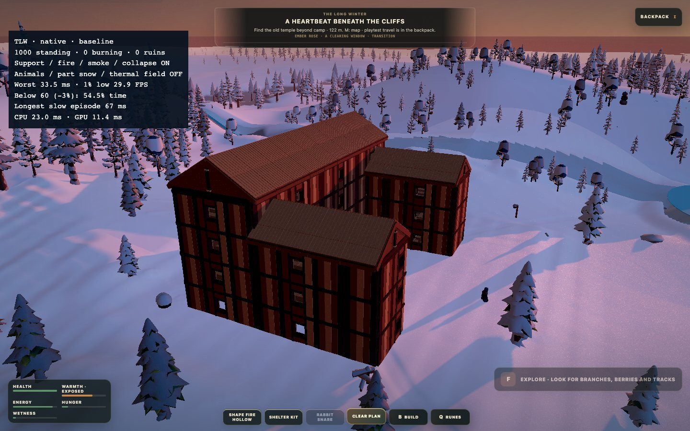
1000 osaa pystyssä, 3 palaa, 0 rauniota. Simulaatioaika 57.3 s.
CPU p50 / p95 / max 28.2 / 38.1 / 77.9 ms; GPU p50 / p95 12.2 / 14.7 ms. Draws p50 3022.0.
Tukityöntekijöitä 4, virheitä 0, hylättyjä vanhoja vastauksia 0.
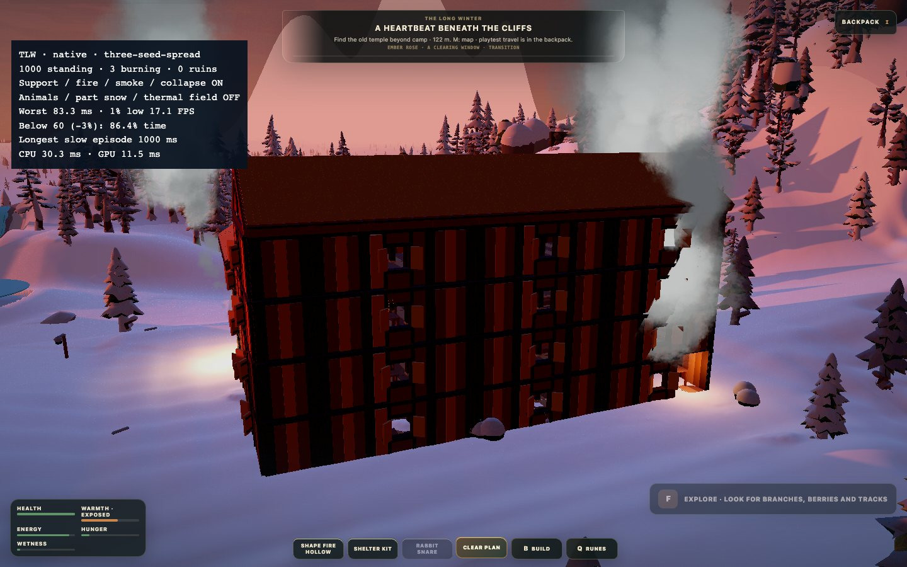
997 osaa pystyssä, 997 palaa, 0 rauniota. Simulaatioaika 71.6 s.
CPU p50 / p95 / max 77.4 / 250.5 / 1683.5 ms; GPU p50 / p95 17.1 / 25.3 ms. Draws p50 2111.0.
Tukityöntekijöitä 4, virheitä 0, hylättyjä vanhoja vastauksia 0.
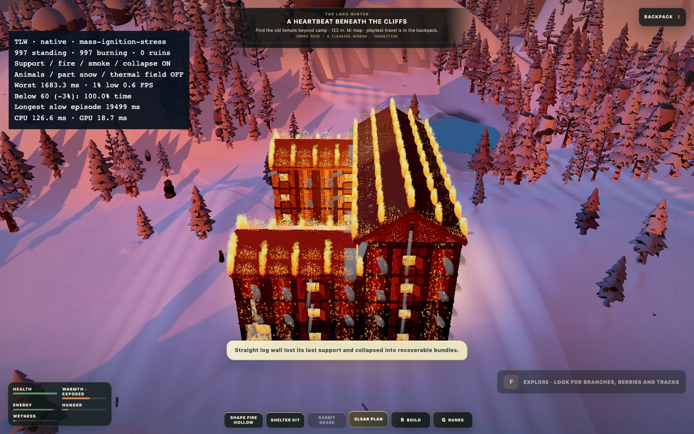
997 osaa pystyssä, 997 palaa, 0 rauniota. Simulaatioaika 78.5 s.
CPU p50 / p95 / max 424.8 / 541.4 / 634.4 ms; GPU p50 / p95 17.7 / 22.3 ms. Draws p50 2177.0.
Tukityöntekijöitä 4, virheitä 0, hylättyjä vanhoja vastauksia 0.
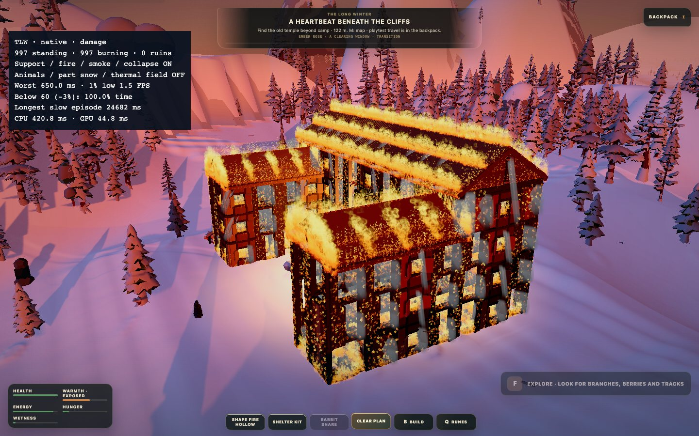
992 osaa pystyssä, 992 palaa, 4 rauniota. Simulaatioaika 93.7 s.
CPU p50 / p95 / max 402.6 / 533.8 / 2924.5 ms; GPU p50 / p95 19.7 / 44.8 ms. Draws p50 2612.0.
Tukityöntekijöitä 0, virheitä 0, hylättyjä vanhoja vastauksia 3.
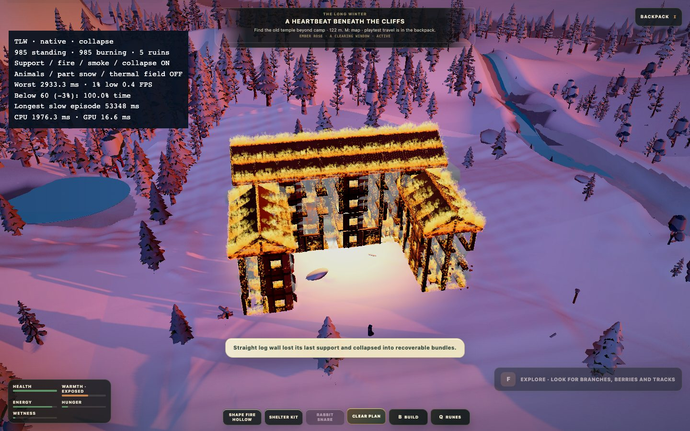
976 osaa pystyssä, 976 palaa, 7 rauniota. Simulaatioaika 95.6 s.
CPU p50 / p95 / max 506.4 / 2906.3 / 2906.3 ms; GPU p50 / p95 25.0 / 25.0 ms. Draws p50 2495.0.
Tukityöntekijöitä 0, virheitä 0, hylättyjä vanhoja vastauksia 3.
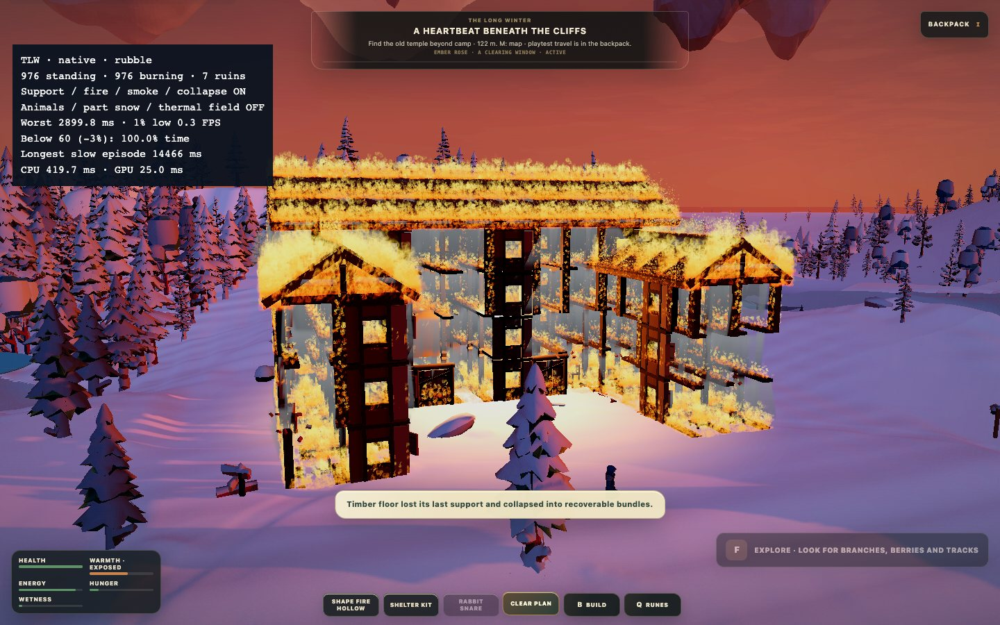
1000 osaa pystyssä, 0 palaa, 0 rauniota. Simulaatioaika 27.0 s.
CPU p50 / p95 / max 11.7 / 16.5 / 27.8 ms; GPU p50 / p95 9.6 / 11.0 ms. Draws p50 846.0.
Tukityöntekijöitä 4, virheitä 0, hylättyjä vanhoja vastauksia 0.
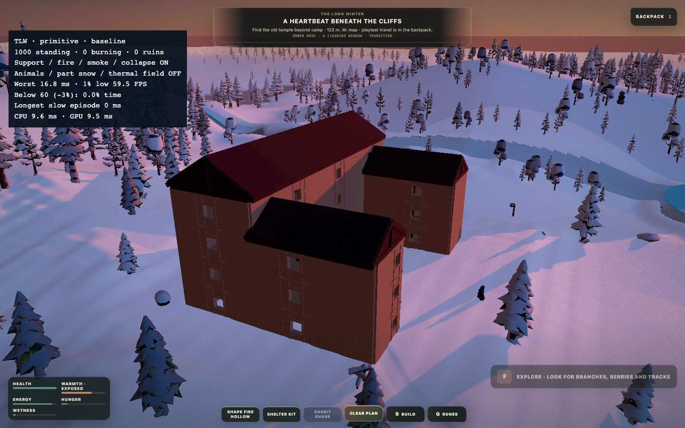
1000 osaa pystyssä, 3 palaa, 0 rauniota. Simulaatioaika 57.2 s.
CPU p50 / p95 / max 16.0 / 22.5 / 67.4 ms; GPU p50 / p95 11.3 / 12.4 ms. Draws p50 923.0.
Tukityöntekijöitä 4, virheitä 0, hylättyjä vanhoja vastauksia 0.
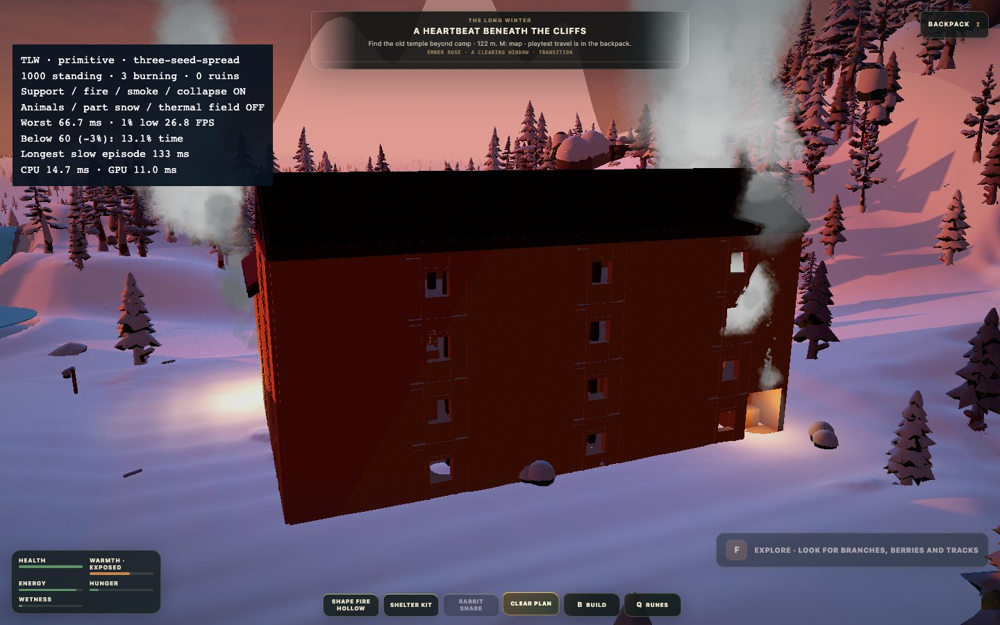
997 osaa pystyssä, 997 palaa, 0 rauniota. Simulaatioaika 71.0 s.
CPU p50 / p95 / max 70.9 / 186.0 / 1686.5 ms; GPU p50 / p95 21.3 / 28.0 ms. Draws p50 1785.0.
Tukityöntekijöitä 4, virheitä 0, hylättyjä vanhoja vastauksia 0.
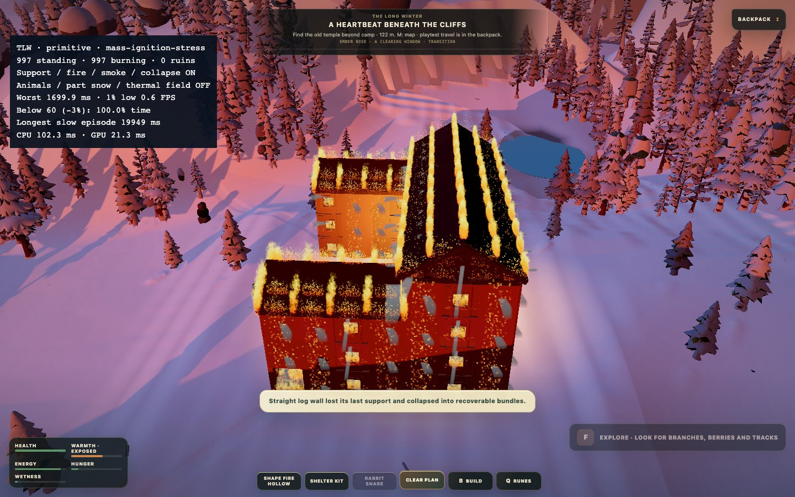
997 osaa pystyssä, 997 palaa, 0 rauniota. Simulaatioaika 79.0 s.
CPU p50 / p95 / max 414.9 / 517.6 / 569.2 ms; GPU p50 / p95 20.3 / 42.2 ms. Draws p50 1935.0.
Tukityöntekijöitä 4, virheitä 0, hylättyjä vanhoja vastauksia 0.
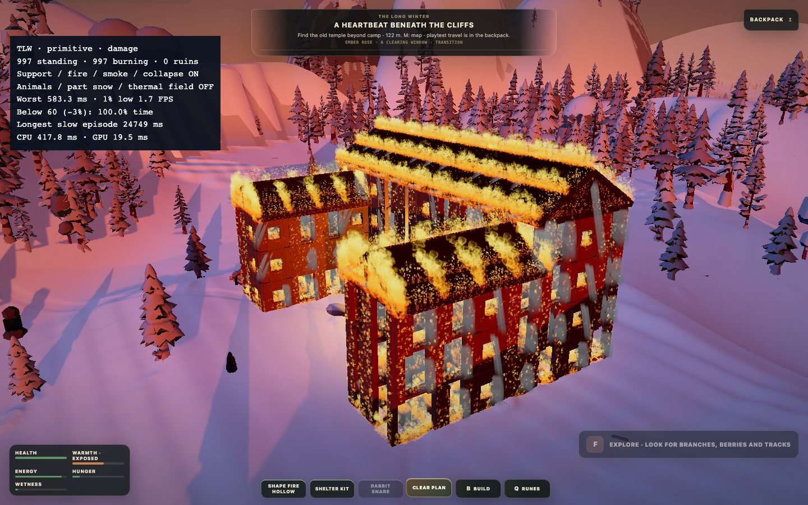
991 osaa pystyssä, 991 palaa, 0 rauniota. Simulaatioaika 92.9 s.
CPU p50 / p95 / max 390.7 / 595.7 / 3302.8 ms; GPU p50 / p95 19.5 / 38.8 ms. Draws p50 2303.0.
Tukityöntekijöitä 0, virheitä 0, hylättyjä vanhoja vastauksia 37.
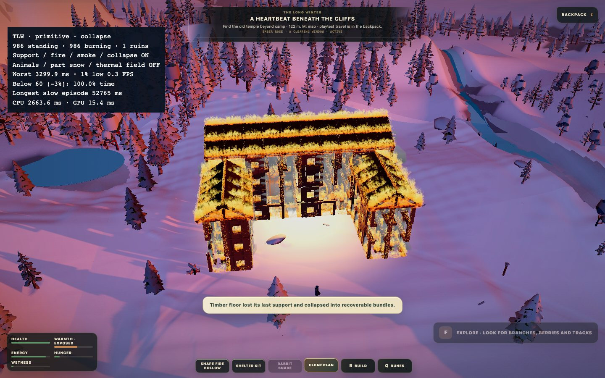
819 osaa pystyssä, 819 palaa, 159 rauniota. Simulaatioaika 97.2 s.
CPU p50 / p95 / max 309.3 / 1838.9 / 1990.2 ms; GPU p50 / p95 18.8 / 25.4 ms. Draws p50 2192.0.
Tukityöntekijöitä 0, virheitä 0, hylättyjä vanhoja vastauksia 5.
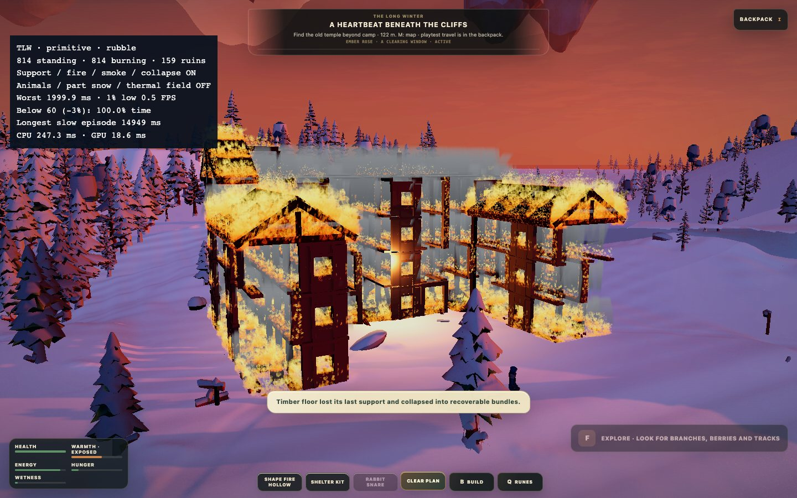